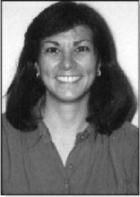

Please note: the AAS Obituaries are temporarily being hosted on this website while their full content is being ingested into the PubPub publishing platform newly adopted by the Bulletin of the American Astronomical Society. When the migration is complete, your existing links will take you to the final, migrated content. Contact peter.williams@aas.org with any questions.
Lynne Karen Deutsch (1956-2004)
It is with deep sadness and regret that we note the passing of our dear friend and colleague Prof. Lynne K. Deutsch. Lynne died on 2 April 2004 after a protracted illness and lengthy battle with complications caused by the blood disease Polycythaemia Vera.
Lynne was born in Chicago on 26 November 1956 to Victor and Ailsa Deutsch. She lived with her family in the town of Morton Grove, IL until she was 8 years old, when they moved to Beverly Hills, CA. She was an outgoing child who played basketball and excelled in her studies. She graduated from Beverly Hills High School at the age of 16 after completing all high school requirements in only three years. Lynne had a beautiful singing voice, and was in the chorus in high school and college.
Lynne earned her first bachelor's degree in philosophy from the University of California at Berkeley in 1977. She then returned to Berkeley and received a second bachelor's degree, this time in physics, in 1981. She was a graduate student and teaching assistant at MIT and earned an MS in physics from MIT in 1983. Lynne then attended the astronomy graduate program at Harvard University, where she earned her MA in 1985 and PhD in 1990. During her degree studies she began crafting mid-infrared instrumentation. These instruments were destined to be used by a host of eager observers to discover, identify, and study many emissions from the Solar System, and galactic and extragalactic sources.
Lynne was a National Research Council Post-doctoral Fellow at NASA Ames Research Center from 1990 - 1992, where she played an important role in the development of the Smithsonian Astrophysical Observatory/University of Arizona Mid-Infrared Array Camera (MIRAC), a well-known and much sought after instrument frequently used in studies of Mercury, Jupiter, the Moon, planetary nebulae, star formation regions, galactic center, young stellar objects, and extragalactic objects.
After leaving NASA Ames Research Center, Lynne taught for several years (1993-96) at Smith College where she had a significant impact on undergraduate research, especially for women, whom she enjoyed mentoring. Lynne joined the faculty in the Astronomy Department of Boston University in 1996 where she taught instrumentation principles and techniques to undergraduate and graduate students. Over the course of her faculty career, she received numerous research grants and fellowships that were used to support her research, her students, and her postdoctoral associates. She was the principal investigator of Boston University's advanced technologies and instrumentation program MIRABU: A Mid-Infrared Array.
As her health declined and the rigors of a full teaching schedule became unacceptably taxing, Lynne took a leave of absence from Boston University and returned to Harvard University and the Center for Astrophysics in 2001. There she became a very active member of the Infrared Group in the OIR Division and a member of the IRAC/Spitzer Space Telescope team. Her research in infrared astronomy covered many areas including star formation, planetary and protoplanetary nebulae, solar system objects, the interstellar medium and infrared-luminous galaxies. Her most recent research with the Infrared Array Camera (IRAC) on the Spitzer Space Telescope concentrated on high-mass star formation and the related evolution of the interstellar medium. In her short life, Lynne made many devoted friends and colleagues and was active in encouraging school-age girls to pursue their interests in the sciences. In her short career, she published more than seventy-five articles. She was an outstanding observer and instrumentalist, whose promising career was tragically cut short.
Lynne was also a devoted mother and wife, and, while still well, she found the time to be an active participant in her son's elementary school. She is very greatly missed by her family. She is survived by her husband Douglas Sondak, PhD and her son Reed Deutsch-Sondak who live in Acton, MA, and her parents and sister Judith who reside in California.
Lynne will be forever missed by her family, friends, colleagues, and the astronomical community. Her contributions will continue to benefit the community for many years to come. We only wish she were here to share them with us. She will be remembered as a dear friend, colleague, accomplished scientist, and dedicated family member.
Obituary written by: Ann L. Sprague (University of Arizona)
BAAS Citation: BAAS, 2004, 36, 1667
SAO/NASA ADS Bibcode: 2004BAAS...36.1668S